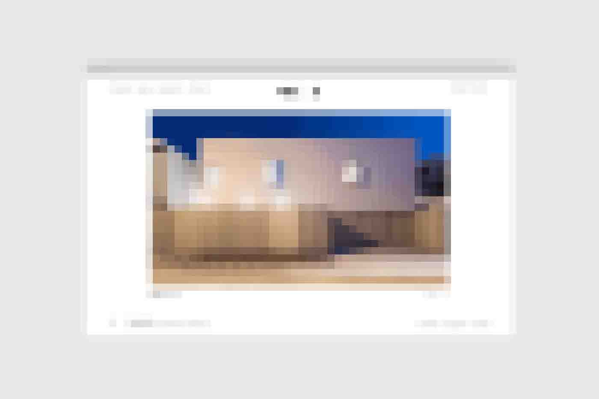
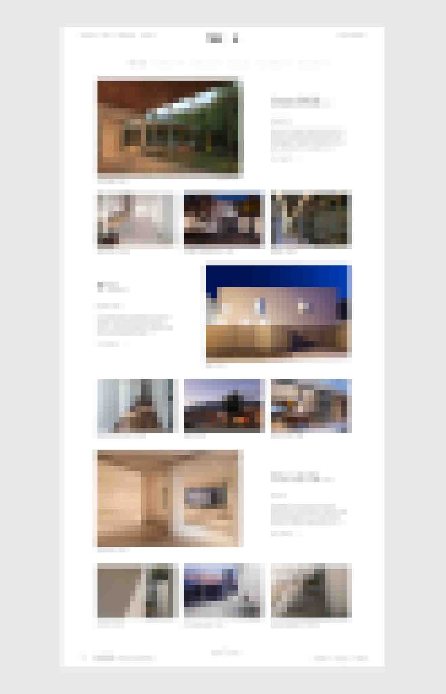
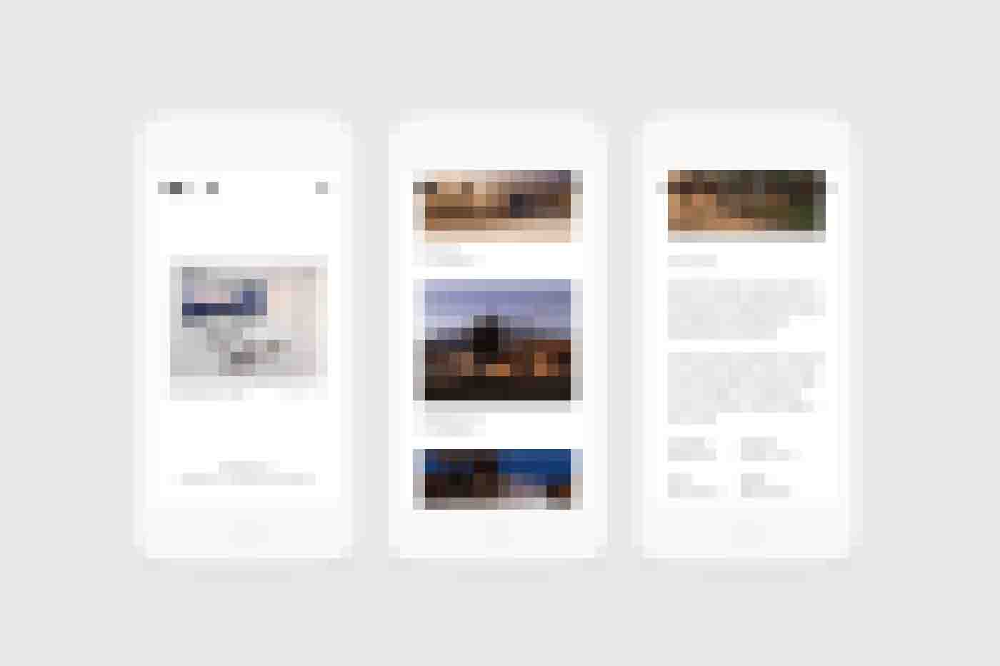

Aware Mobile App
Mobile UX Design
According to the the National Highway Traffic Safety Administration, 80% of accidents and 60% of highway deaths in construction zones are the results of distracted driving.



The Problem
According to the the National Highway Traffic Safety Administration, 80% of accidents and 60% of highway deaths in construction zones are the results of distracted driving. The prime intention of Oldcastle was to put use of the latest technology to bring down the number of casualties in the road construction industry.